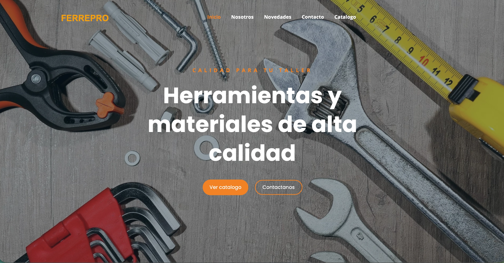
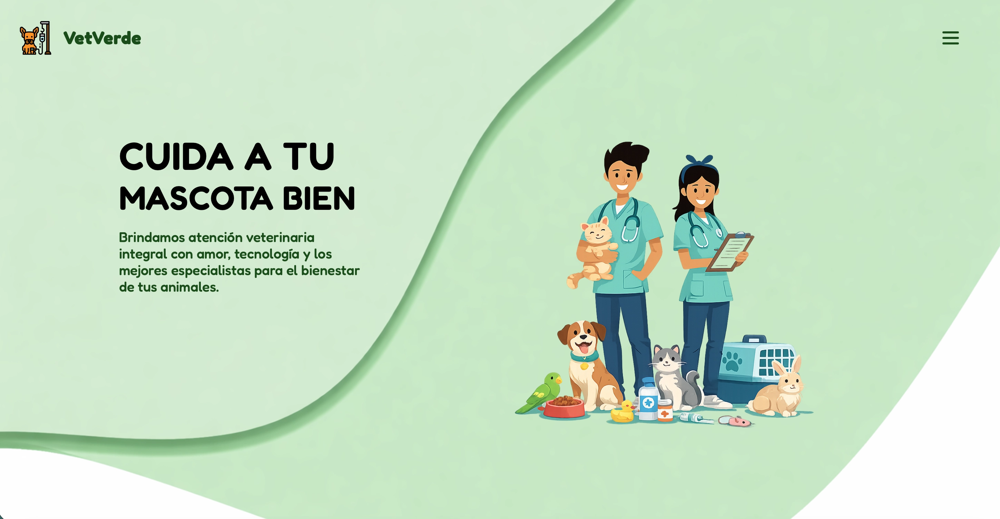

Soluciones que elevan tu
presencia digital.
Diseñamos herramientas digitales robustas, elegantes y precisas.
No solo creamos sitios web, construimos el hogar digital de tu marca con
tecnología de vanguardia.
FerrePro — Página web completa
El desafío
Ofrecer una vitrina digital seria para una ferretería: catálogo claro, confianza y canales de contacto sin sacrificar orden visual.
La solución
Sitio multipágina con navegación a inicio, nosotros, novedades y contacto; catálogo con productos y precios, bloque de ofertas, testimonios y pie con ubicación y datos de contacto.

VetVerde — Landing de conversión
El desafío
Transmitir confianza y cercanía en salud veterinaria desde el primer pantallazo, y llevar al visitante a agendar cita o contactar sin fricción.
La solución
Hero con mensaje claro sobre bienestar animal, beneficios y servicios destacados, prueba social o secciones de confianza, y llamadas a la acción visibles hacia contacto o reserva.
